Written by Les Bird in 2009
The H8D Utility is a program with the purpose of managing disk images in the H8D format. This is the format used for the Heathkit 8-bit computers such as the H8 and H89. On this web site are several hundred disk images for the Heathkit 8-bit computers.
The utility includes the following functionality:
- Catalogs disk images outputting to text or HTML files
- Create disk images by reading disks from a real Heathkit computer and downloading the image over a serial port connection
- Send disk images to a real Heathkit computer over a serial port connection and write them to a floppy disk
- Send disk images to and from a Semi-Virtual Disk drive (SVD) using the integrated SVD control panel
- Try the disk images in the integrated H-89 emulator
This web page explains how to use the H8D Utility.
CATALOGING
To use the utility for generating a catalog of the contents of all your disk images, follow these steps:
Click the FOLDER button and select a folder where your disk images reside. A list of disk images will be shown on the left side panel.
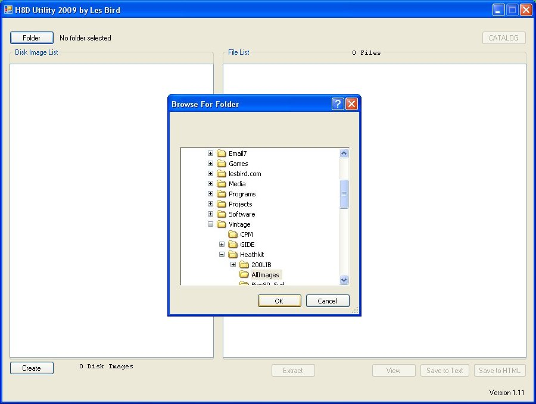
Now select one or more disk images on the left side window and click the CATALOG button.
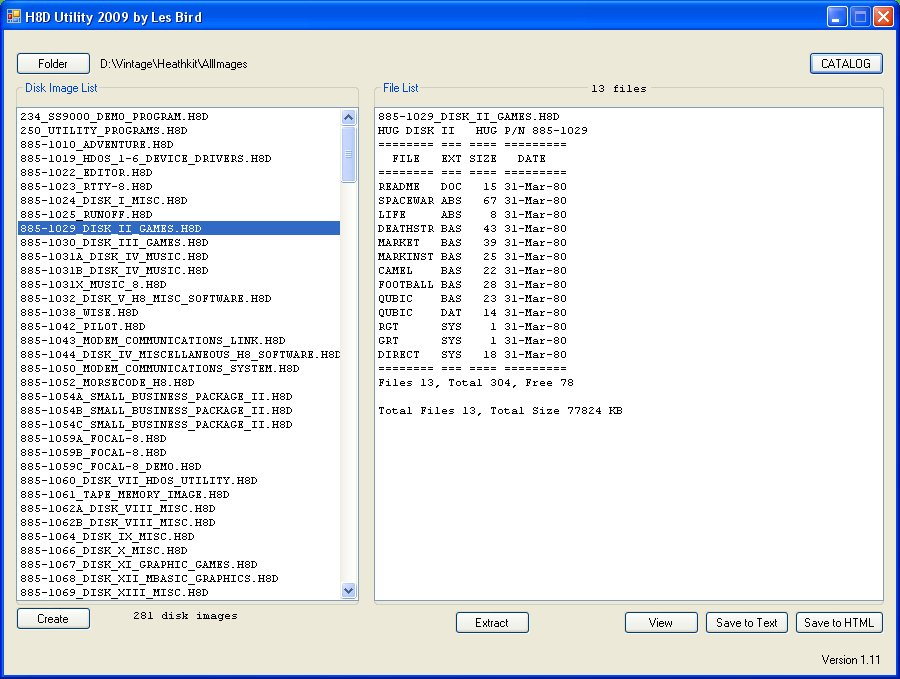
To generate a list of files from all of your disk images just leave them all unselected when you click the CATALOG button.
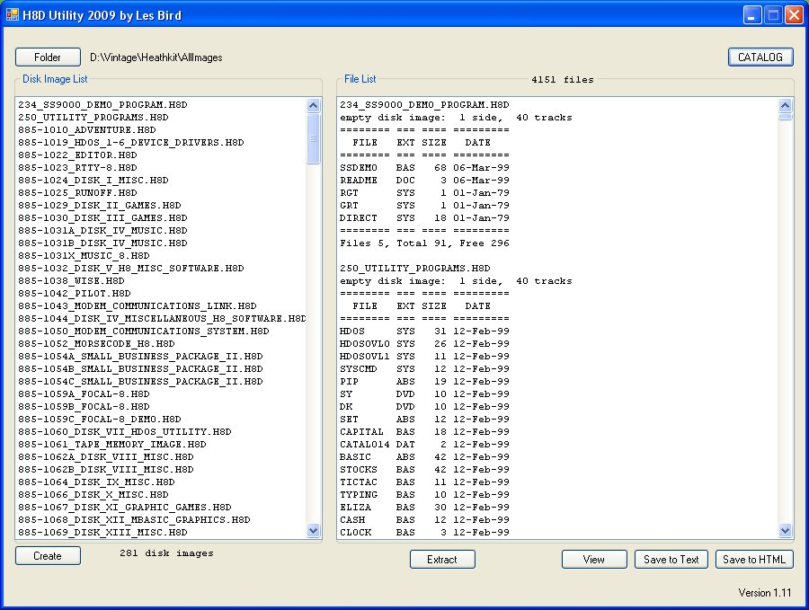
VIEW AND EXTRACT
With the disk contents listed on the right side you can scroll through the list, view any of the text files and extract any of the files to your PC hard disk. Just select the file on the right side and click the VIEW or EXTRACT button. When you extract a file it is stored in a folder with the name of the disk image file and "_Files" appended to it. To extract all the files from all the disk images just leave the files on the right side unselected when you press the EXTRACT button.
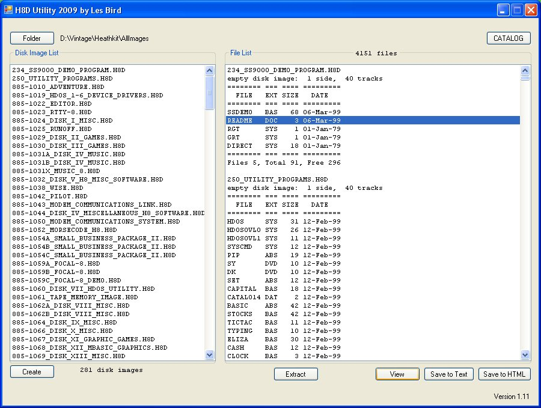
To save a text or HTML file with the disk catalog just press one of the SAVE TO TEXT or SAVE TO HTML buttons. A file will be generated with the contents of the right side panel and saved to your hard disk. The file will be in the disk image folder you selected on the left side (where the images are) with the name H8DCATALOG.TXT or H8DCATALOG.HTML.
READ AND WRITE DISK IMAGES
The H8D Utility also allows you to create H8D disk images. This is done using Dwight Elvey's fantastic H89LDR program. The H8D Utility has many of the H89LDR control program features built in. To use this feature follow these steps.
First, load the H8D Utility and press the CREATE button.
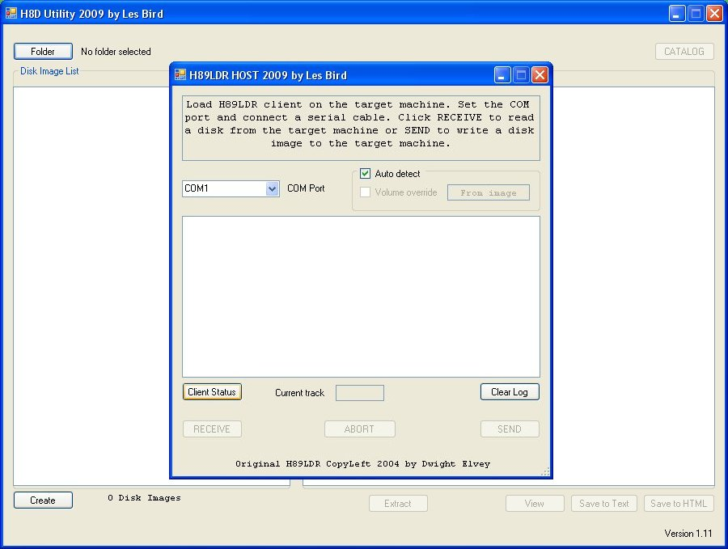
The H89LDR program works by connecting your PC computer to your H8 or H89 via a serial cable link. When you press the CREATE button you will be presented with this screen where you can configure the COM port to use for communicating with the Heathkit computer.
The next step is to press the Client Status button.
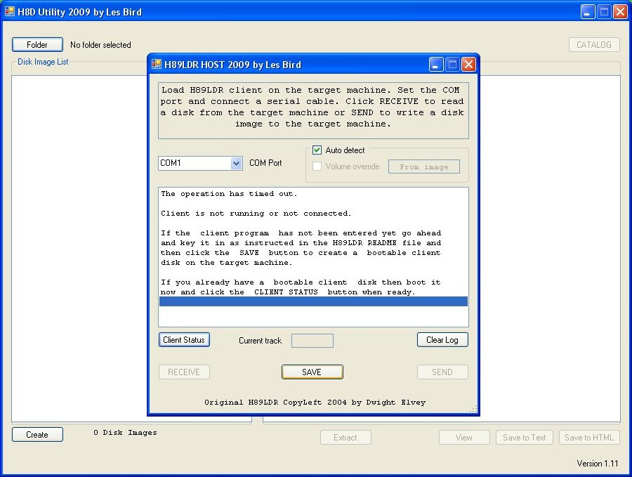
At first you will see the above screen. No communications has been established yet between your PC and the Heathkit computer. Now you should follow Dwight's README file and key in one of the following bootstrap programs:
H8 with H8-4 or H89
H8 with H8-5 Cassette I/O board
Once the bootstrap program is entered and it is running on the Heathkit computer you can press the SAVE button to transmit the H89LDR client software. At this point the client software is running on the Heathkit computer and if everything went well you should see a "Client is ready" message in the log window. The H8D Utility will then ask if you wish to save the H89LDR program on the Heathkit computer to a disk so that you can boot directly to the loader client. Make sure you have a formatted disk in the Heathkit computer SY0 disk drive and select YES to create the boot disk or NO to skip this step.
Once communications has been established between the Heathkit computer and your PC you can then click RECEIVE to copy a disk from your Heathkit computer to your PC or SEND to copy a disk from your PC to your Heathkit computer. Keep in mind that if you click SEND, once you select an image file and answer YES to start the process it will overwrite whatever disk is in your Heathkit computer so make sure you have a blank or unimportant disk in the SY0 drive.
THE SVD CONTROL PROGRAM
As of version 1.45 of the H8D Utility you can send and receive disk images to and from the SVD (Semi-Virtual Disk). To use the built-in SVD Control Program click on the SVD button on the main screen.
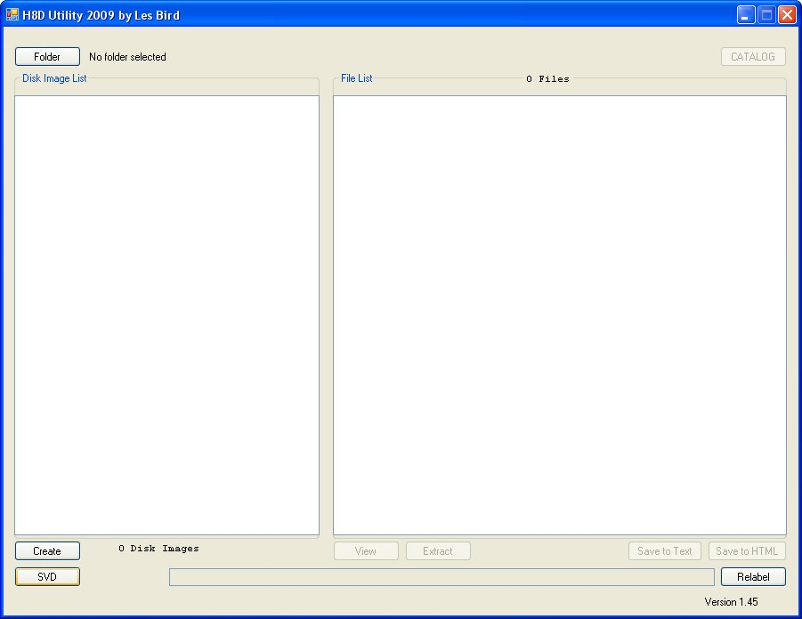
A pop-up window will appear with SVD controls where you can select the COM port to use and whether or not to use 115200 baud. Without the 115200 box checked the default baud rate of 57600 is used. With my particular PC the reliability is greatly increased by using the default baud rate. When I check 115200 on my system I get errors when receiving disk images but most of the time I can send images to the SVD just fine.
Once you select the COM port and baud rate click on the CHECK button to connect to the SVD.
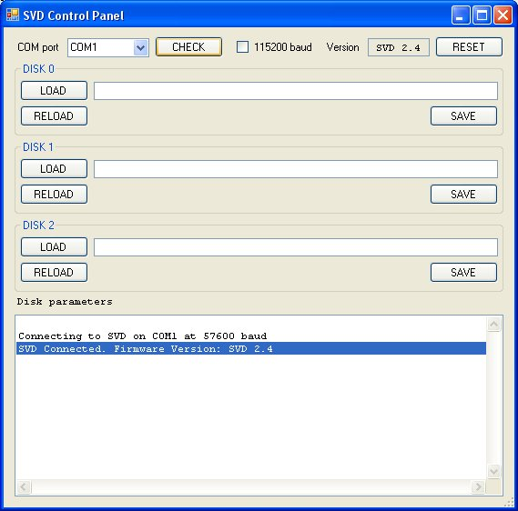
A connection message will appear along with the version of the SVD firmware.
SEND A DISK IMAGE TO THE SVD
To send a disk image to the SVD click on the LOAD button for the virtual drive you want to load the image to. A window will appear where you can choose a disk image to use. Navigate to the folder where the disk images are and select one of the files to send then click the OPEN button. You can also double-click the file.

Once a file is selected it will be immediately transmitted to the SVD and the SVD will be started. Do this for each drive you want to populate.
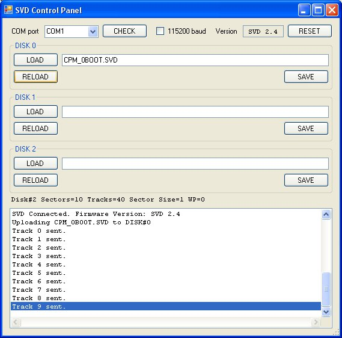
When the transfer is completed the SVD will be started. You can then begin using the images from your Heathkit computer. If you want to populate another virtual drive go ahead and click the LOAD button for that drive and send the file. If you wish to re-send the current disk image file to the SVD just click on the RELOAD button.
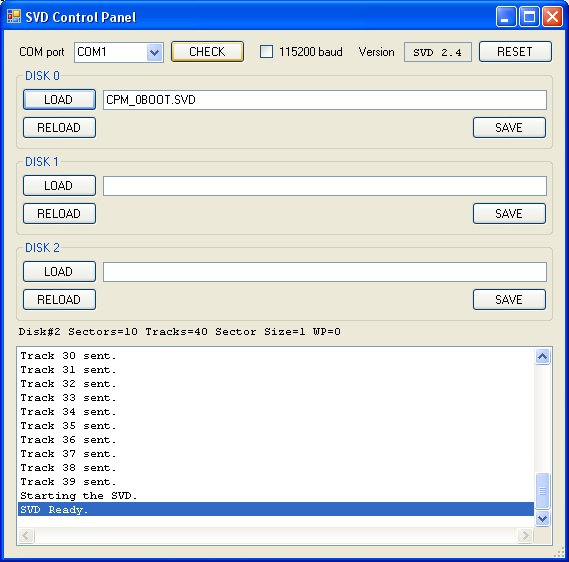
RECEIVE A DISK IMAGE FROM THE SVD
To receive a disk image from the SVD click on the SAVE button for the virtual drive that you want to copy the image from. A window will appear so that you can choose where to save the file and what to name it.
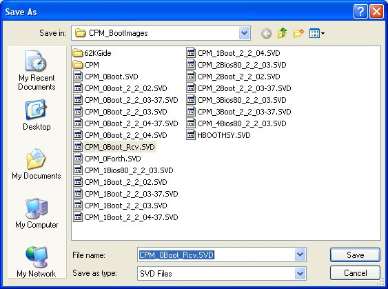
The image that is currently in that drive slot on the SVD will be transmitted and saved to the PC.
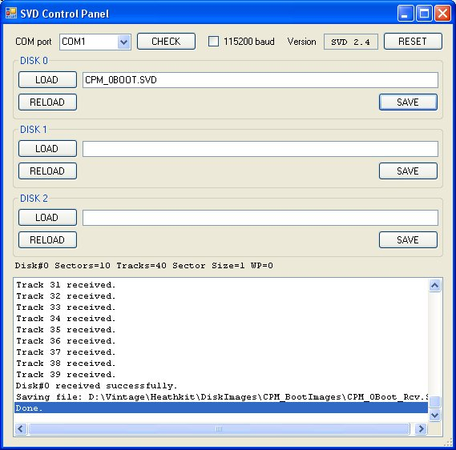
IMPORTANT NOTE ON FILE EXTENSIONS
The default format for disk images when sent and received is the SVD format. All files will be saved with the ".SVD" extension. To save the file in the H8D format just change the extension to be ".H8D" when you name the file. It will then be converted from the SVD format to H8D and then saved to the hard drive of your PC. You can also choose to save it in the H17 text format by changing the extension to ".H17". The only supported formats right now are SVD, H8D and H17.
THE H-89 EMULATOR
The H8D Utility has a built-in H-89 emulator so that you can try any of the H8D disk images. The following operating systems are supported with the current version of the emulator:
HDOS 1.6
HDOS 2.0
HDOS 3.0
CP/M 2.2.02
CP/M 2.2.03
CP/M 2.2.04
To launch the emulator click on the EMULATOR button.
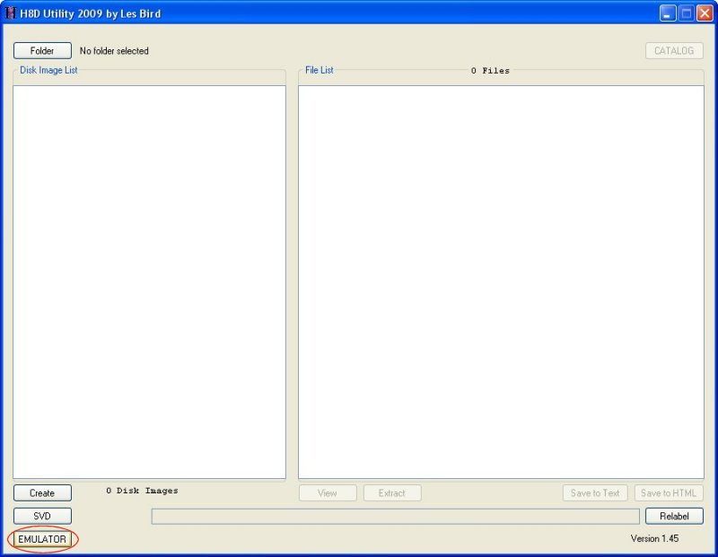
The H-89 emulator control panel will pop up.
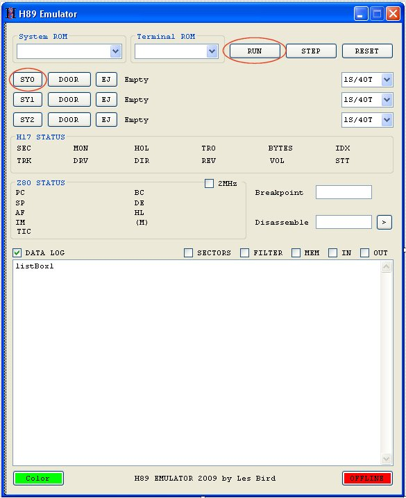
From the control panel you can load H8D disk images into any of the drive slots by clicking the drive slot button (SY0 thru SY2). You can also select a system ROM and output terminal to emulate. Note that the output terminal is simulated, not emulated. By that I mean that it does not actually use the terminal ROM (although it does use the terminal FONT). It simply translates the ESC sequences for any special cursor functions or graphic characters and displays them accordingly. Most of the time you'll use the defaults which are the 444-62 (MTR-89) system ROM and H-19 terminal. Once you have loaded disk images you can click on the RUN button and the output window will appear with the H-89 system prompt "H:". From the system prompt you can execute several system ROM commands but the primary use will be to boot to a disk operating system such as HDOS or CP/M. To do this press the "B" key and press ENTER. This will boot from the disk image that is loaded into the primary device which is SY0.
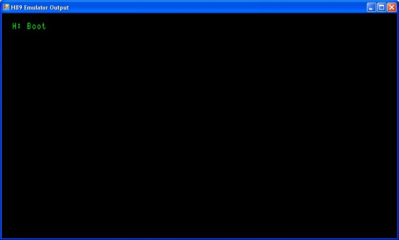
IMPORTANT NOTE: If you are booting from a distribution image of HDOS it may appear that the system has hung but in fact it is waiting for you to press the SPACEBAR so that the operating system can auto-detect your terminal baud rate. After you press the SPACEBAR the boot process will begin.
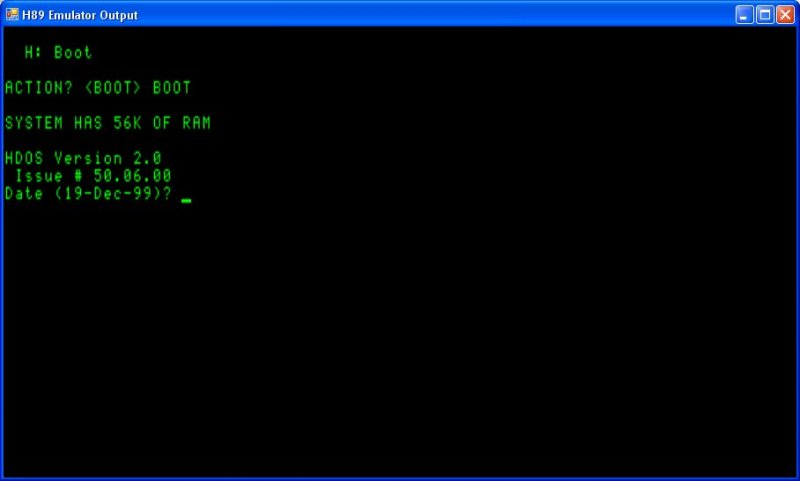
To learn more about the HDOS operating system download one of the operating manuals from this web site. At the HDOS prompt you can type CAT to get a catalog of files, type in the name of any of the .ABS files to execute them and MOUNT and DISMOUNT disks. The boot drive is always assigned SY0 and the other two drives are SY1 and SY2.

THE 2MHz CHECKBOX
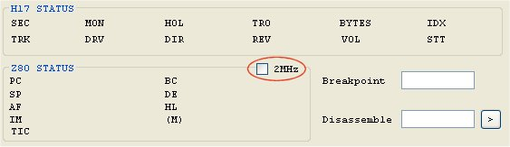
Switch back over to the control panel at anytime to change disk images or turn on other features of the emulator. When playing games you will want to make sure you turn on the 2MHz checkbox so that the system runs close to the speed of the real system. By default the button is not checked and the emulator runs at full speed.
THE RESET BUTTON
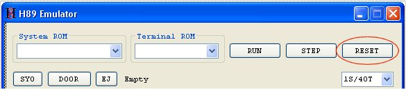
Click the RESET button on the control panel to reset the emulation. This will reset all the internal flags and reload the system ROM. This is the same as pressing SHIFT-RESET on the real computer to issue a system reset which will take you back to the system ROM prompt "H:".
THE DOOR BUTTON
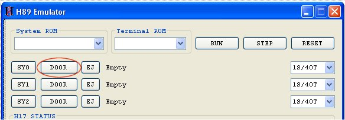
There is a DOOR button next to the drive slots (SY0 thru SY2). This simulates opening the drive door on a real system. Some of the HDOS utilities would auto-detect when you inserted a new disk by waiting for the drive door to open. When you close the door it'll read the sector headers and determine if a different disk has been inserted. If you run an HDOS utility that says something like "Insert destination:" and waits there, it is usually waiting for a new image to be inserted. You can then click the DOOR button (it now reads CLOSE), load a new disk image, and click the CLOSE button.
YELLOW DRIVE BUTTONS
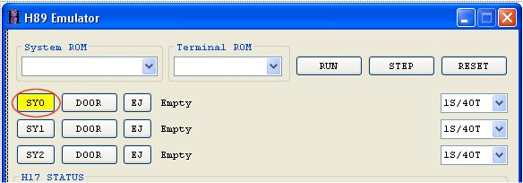
When a drive slot button (SY0 thru SY2) turns yellow, that means the image in memory is now dirty (it was written to). Click the yellow drive button to save the "in-memory" image to the hard drive. Usually when you change some HDOS parameters you'll want to save out a new disk image so that the parameters will load the next time you boot.
DRIVE DENSITY SELECTION BOX
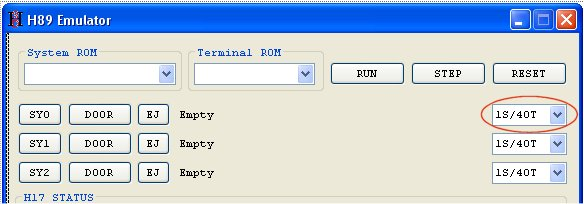
The drive density drop down box will determine the capacity of the disk for that drive slot. You can choose from 1S/40T (one sided, 40 track 100KB) all the way up to 2S/80T (two sided, 80 track 400KB). This option is only useful when using a version of HDOS or CP/M that supports higher capacity drives. In the H8D Bootables zip file are bootable versions of HDOS and CP/M that support this feature. IMPORTANT NOTE: My emulator cannot auto-detect how the drives are configured from the booted operating system so you need to know this information and setup the drive capacities appropriately.
HIGH CAPACITY DRIVES USING HDOS
For HDOS, boot with either the HDOS_2-0_System_Hsy.h8d or the HDOS_3-02_System.h8d disk images. HDOS 2.0 supports higher capacity drives using the HUG SY (HSY) device driver which is available on HUG disk part #885-1095. For your convenience I already installed the HSY device driver in the HDOS_2-0_System_Hsy disk image. Drives SY1 and SY2 are configured as 2S/80T drives for this disk image. HDOS 3.0 supports high capacity drives natively so no special device drivers are required.
HIGH CAPACITY DRIVES USING CP/M
Heath CP/M requires the BIOS-80 extension to support high capacity drives. The installation of BIOS-80 is rather complicated so I setup a version of CP/M 2.2.03 with the extension already installed and saved it as CPM_2-2-03_Bios80_Zcpr.h8d. It is pre-configured with drive SY0 as a 1S/40T drive and drives SY1 and SY2 as 2S/80T drives. When you boot with the BIOS-80 disk image make sure you change the drive capacity for SY1 and SY2 to be 2S/80T.
FORMATTING HIGH CAPACITY DISK IMAGES
In HDOS you run the INIT program from the HSY system disk to format high capacity disk images. Drives SY1 and SY2 are setup as 2S/80T drives and the INIT program will ask if you want to format a double sided disk. If you answer YES it will begin the format process for a 400KB disk image. If you answer NO it will begin the format process for a 200KB (1S/80T) disk image. When using the HSY system disk you can only write to 80 track disk images (one or two sided) but you can read both 40 and 80 track images.
In CP/M the FORMAT program does not work in my emulator. To create an empty disk image all you have to do is select the capacity for the drive you want to "format" (2S/80T for SY1 and SY2) and type "ERA B:*.*" (for SY1) or "ERA C:*.*" (for SY2) and answer "Y" to the "ALL" prompt. This will create a 400KB image and write out a new directory structure to create an empty disk image. That's all you need to do to setup a blank disk image in CP/M. In the H8D Bootables zip file you'll find an empty disk image that has already been formatted for use with BIOS-80 CP/M. It is called CPM_2-2-03_2S80T.H8D.
This concludes the basic operations of the H-89 emulator.
Some screen shots from the H-89 emulator follow:
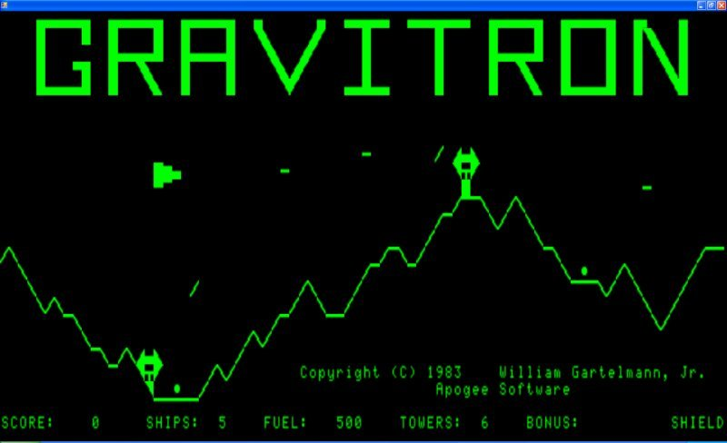
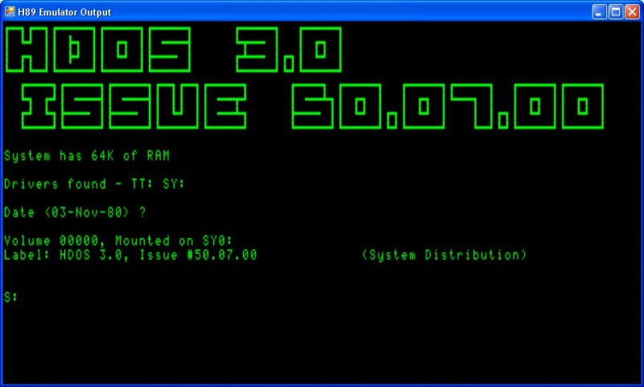
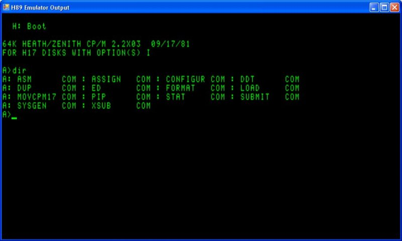
BACK to the software page
February 10, 2010